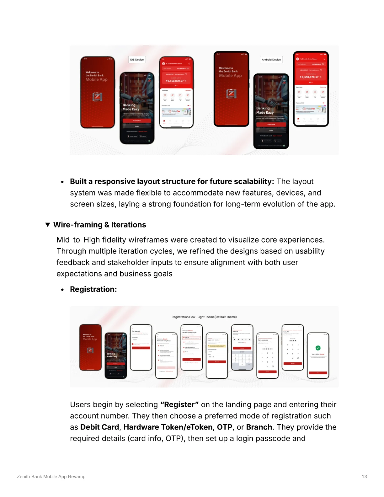
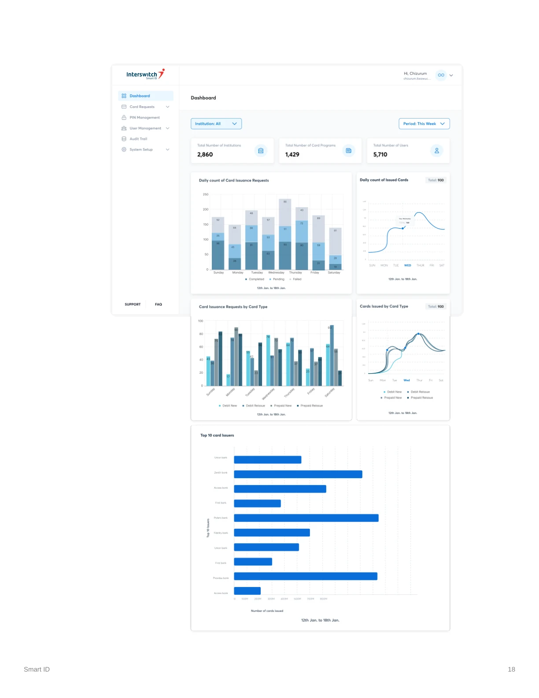
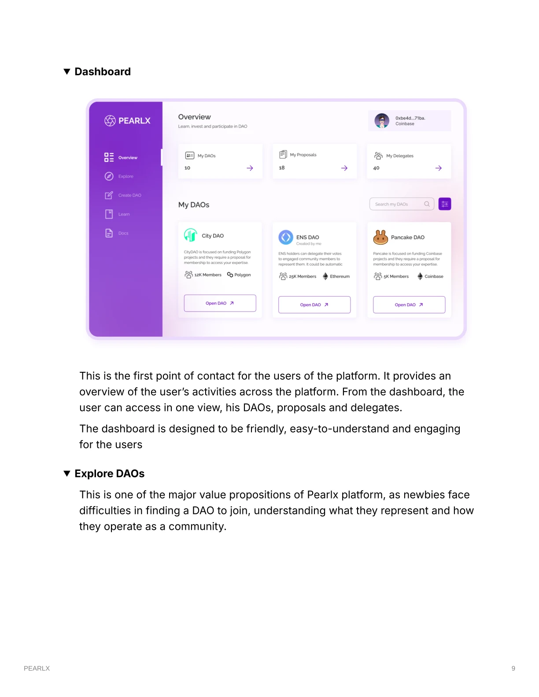
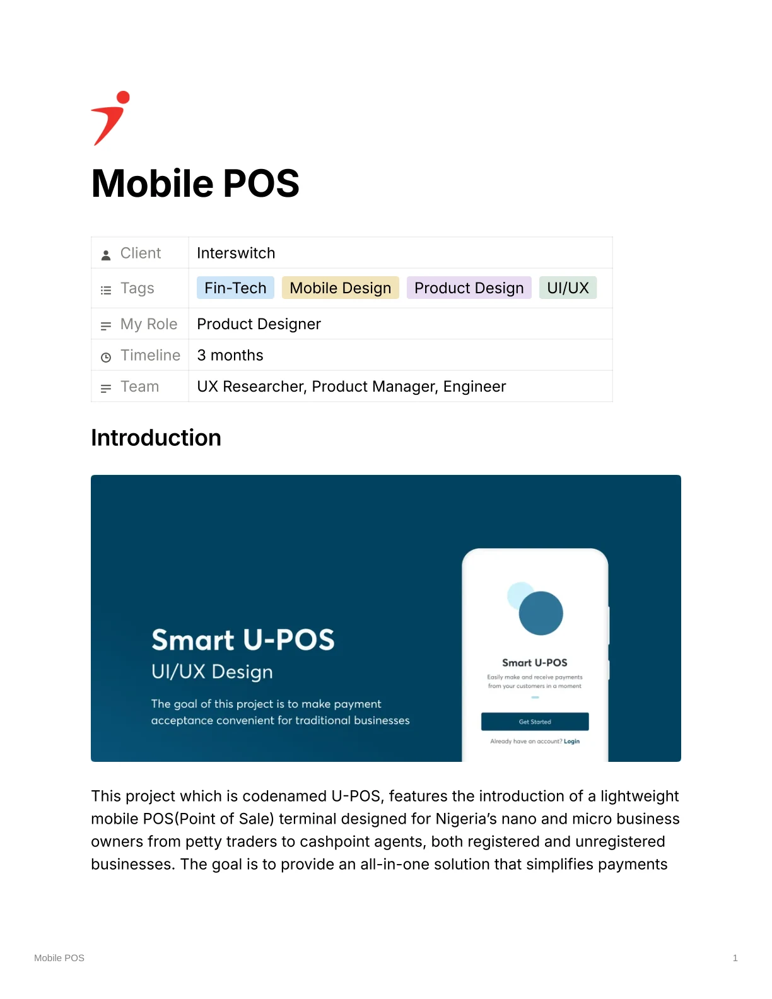

01 / 04
Zenith Bank
Mobile App
Reimagining everyday banking with clearer navigation, more accessible patterns, and a scalable design language for a major mobile platform.
UX STRATEGY · MOBILE · DESIGN SYSTEMView case study
SENIOR PRODUCT DESIGNER · DESIGN LEAD
I’m Chizurum. I shape digital financial products that people can understand, trust, and use with confidence.

THE SHORT VERSION
For more than six years, I’ve worked across banking, payments, and financial tools—turning layered requirements into experiences that feel simple and dependable.
More about me01 / SELECTED WORK
A selection of products and experiences across consumer banking, enterprise tools, and emerging technology.
Reimagining everyday banking with clearer navigation, more accessible patterns, and a scalable design language for a major mobile platform.

02 / 04Making card and PIN issuance easier to manage with clearer workflows for financial institutions and administrators.

03 / 04Helping people discover, join, and contribute to DAOs with an approachable experience for newcomers.

04 / 04A lightweight payment experience designed around the realities of nano and micro business owners in Nigeria.
02 / ABOUT ME
I’m a product designer and design lead working at the intersection of people, systems, and business.
At Interswitch, I lead design across mobile financial services, including major banking apps and a white-label portfolio serving 15–20 microfinance banks. My work spans research, product strategy, interface design, design systems, and design quality—always in close partnership with product and engineering teams.
I care about the details that build trust: the language people understand, the path they can follow, and the consistency that makes a product feel reliable.
03 / HOW I WORK
Good products come from asking better questions, testing assumptions, and working closely with the people building them.
Listen to users and stakeholders. Map needs, constraints, and the real problem underneath the brief.
Turn insights into flows, prototypes, and coherent systems that make hard things easier.
Test, collaborate, and improve the experience through delivery and beyond.
04 / GET IN TOUCH
Have a product challenge, an opportunity, or a conversation in mind? I’d love to hear about it.
chizurumibeawuchi@gmail.com